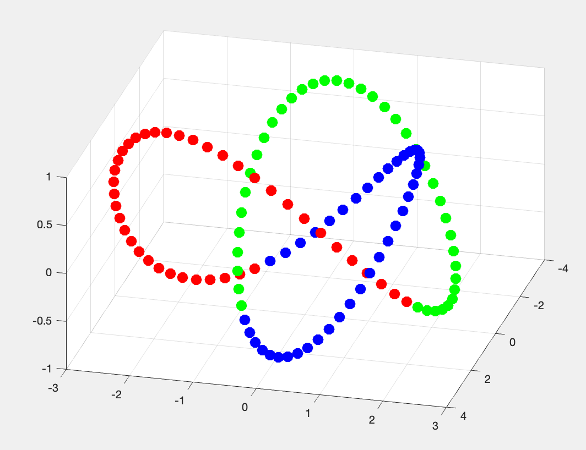
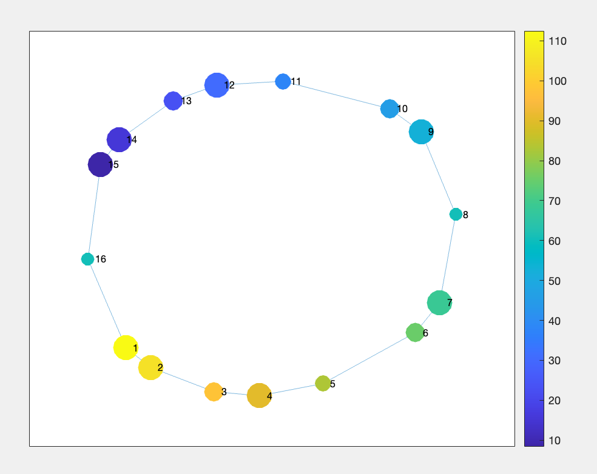
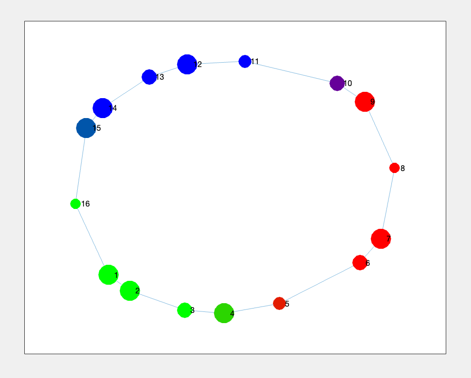
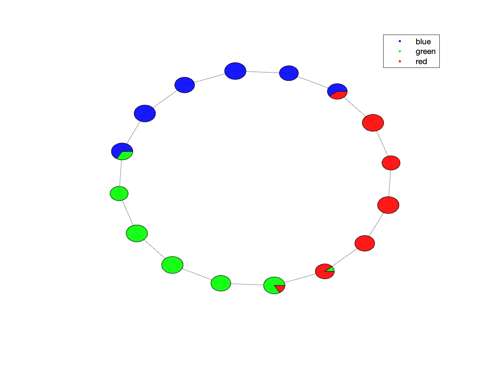
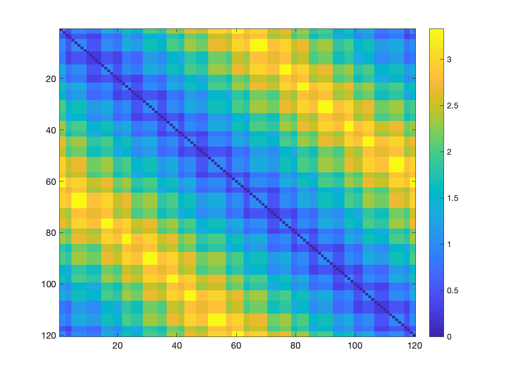

Tutorial 1: Running Mapper as a Library
All the code for this tutorial can be found in the tutorials/tutorial1 folder. Run those files or just copy the snippets into your MATLAB environment.
Step 1: Import the library
To use the demapper library, you need to add the paths to the demapper files. We need all the files within the code subfolder:
clear;
% from this file location, go up two levels to find the base folder
basefolder = fileparts(fileparts(fileparts(mfilename('fullpath'))));
codefolder = [basefolder,'/code'];
addpath(genpath(codefolder)); % add the code folder to the path
% locate the data folder
datafolder = [basefolder, '/hasegan_et_al_netneuro_2024/data/trefoil_knot/'];
This was set to run from the tutorials/tutorial1 location. If you are running from a different location, you need to adjust the path basefolder accordingly.
Step 2: Explore the data
Load the data from the trefoil knot and explore the 3D presentation.
% The data file is a matrix defined in a CSV file format without a header.
data_path = [datafolder, 'data_treefoil.1D'];
data = read_1d(data_path);
% Size of data will be 120x3. A 3D dataset with 120 points and 3 coordinates
size(data)
% Explore the data
figure;
plot3(data(:,1), data(:,2), data(:,3), 'x');
% Load the "nodeCData" data, coloring each node as one of 3 colors
coloring_data = [datafolder, 'data_treefoil_task_nodeCData.1D'];
nodeCData = read_1d(coloring_data);
% Explore the treefoil knot data with the colors
figure;
scatter3(data(:,1), data(:,2), data(:,3), 100, nodeCData(:, 1:3), 'filled');
Resulting image:
{kind=link}
Figure 2.1: trefoil Knot data in 3D
Step 3: Run Mapper
Run the following code to run a simple Mapper configuration on our dataset.
% zscore the data before running Mapper
data = zscore(data);
% Generate simple Mapper options. k=6, resolution=5, gain=30
opts = BDLMapperOpts(6, 5, 30);
% Run the Mapper algorithm
res = mapper(data, opts);
What are the results, what do they look like?
res
% struct with fields:
% options: [1×1 struct]
% memberMat: [16×120 logical]
% adjacencyMat: [16×16 double]
% nodeMembers: {16×1 cell}
% knn_g: [1×1 graph]
Looks like mapper identified 16 nodes that represents the topology of the input data. Each of the original 120 data points is a member of one or more of the nodes. The res.memberMat matrix represents this membership.
memberMat: is a logical matrix of size numNodes x numDataPoints where each row is a logical vector indicating which data points are members of the node
Another way to view the membership is through the nodeMembers cell array.
nodeMembers: cell array contains the indices of the data points that are members of each node.
res.nodeMembers
% ans =
% 16×1 cell array
% {[107 108 109 110 111 112 113 114 115 116 117 118]}
% {[100 101 102 103 104 105 106 107 108 109 110 111]}
% {[ 93 94 95 96 97 98 99 100 101 102]}
% {[ 85 86 87 88 89 90 91 92 93 94 95 96]}
% {[ 79 80 81 82 83 84 85 86 87]}
% {[ 71 72 73 74 75 76 77 78 79 80]}
% {[ 63 64 65 66 67 68 69 70 71 72 73 74]}
% {[ 57 58 59 60 61 62 63 64]}
% {[ 47 48 49 50 51 52 53 54 55 56 57 58]}
% {[ 41 42 43 44 45 46 47 48 49 50]}
% {[ 34 35 36 37 38 39 40 41 42]}
% {[ 25 26 27 28 29 30 31 32 33 34 35 36]}
% {[ 19 20 21 22 23 24 25 26 27 28]}
% {[ 10 11 12 13 14 15 16 17 18 19 20 21]}
% {[ 3 4 5 6 7 8 9 10 11 12 13 14]}
% {[ 1 2 3 4 117 118 119 120]}
Those nodes are connected to each other based on how many data points they share. The res.adjacencyMat matrix represents this connectivity.
adjacencyMat: is a matrix of size numNodes x numNodes where each entry is the number of datapoints that they share.
the other field of the resulting structure are:
options: are the opts used to generate the results
knn_g: is the Penalized Reciprocal K-Nearest Neighbors graph of the data points used to generate the mapper. Check Hasegan et al. 2024 for more details.
Step 4: Visualize the results
To visualize the results, we can simply use the MATLAB built-in plot function.
%% Figure 4.1
% Generate the simplest adjacency matrix
figure;
g = graph(res.adjacencyMat);
plot(g, 'Layout', 'force', 'Usegravity', true, 'WeightEffect', 'inverse');
%% Figure 2
% We can do better by coloring the nodes based on the average value of the node members
% averaging over nodeMembers cell array
avgNode = cellfun(@mean, res.nodeMembers);
% and by sizing the nodes based on the number of node members
nodeSize = cell2mat(cellfun(@(x) size(x, 2), res.nodeMembers, 'UniformOutput', false));
nodeSize = normalize(nodeSize, 'range', [10, 20]);
figure;
g = graph(res.adjacencyMat);
plot(g, 'Layout', 'force', 'Usegravity', true, 'WeightEffect', 'inverse', ...
'MarkerSize', nodeSize, 'NodeCData', avgNode);
colorbar
colormap parula
%% Figure 3
% We can do even better by coloring the nodes based on the average color of the node members
% This time, we use the `nodeCData` data to color the nodes
nodeColor = cellfun(@(x) mean(nodeCData(x, :), 1), res.nodeMembers, 'UniformOutput', false);
nodeColor = cell2mat(nodeColor);
figure;
g = graph(res.adjacencyMat);
plot(g, 'Layout', 'force', 'Usegravity', true, 'WeightEffect', 'inverse', ...
'MarkerSize', nodeSize, 'NodeColor', nodeColor(:, 1:3));
The resulting figures are the following:

Figure 4.1: trefoil Knot data representation after Mapper
{kind=link}
Figure 4.2: trefoil Knot data representation after Mapper with node size representing the number of points withing each node; and node color representing the average point index. Based on `nodeMembers`
{kind=link}
Figure 4.3: trefoil Knot data representation after Mapper with node color representing the average data point membership based on colors defined in `nodeCData` or Figure 2.1
Step 5: “Advanced” Visualization: plot_task
An even better way to visualize the composition of the nodes regarding the points, we can use the plot_task utility:
% Set the path of the resulting plot
save_path = 'figure_5_1.png';
% Load the "timing" data, coloring each node as one of 3 colors
fn_timing = [datafolder, 'data_treefoil_task.csv'];
timing_table = readtable(fn_timing, 'FileType', 'text', 'Delimiter', ',');
timing_table.task_name = string(timing_table.task_name);
% Define the colormap, so that each node is colored according to the task
cmap = [0 0 1; 0 1 0; 1 0 0]; % Blue, Green, Red
% Simply plot the task by calling `plot_task`
plot_task(res, timing_table, save_path, false, cmap);
The timing_table needed is loaded from a CSV file containing the label for each node. The first 10 elemets of the CSV are as follows, seen using the BASH command
head hasegan_et_al_netneuro_2024/data/trefoil_knot/data_treefoil_task.csv
task_name
green
green
green
green
green
green
blue
blue
blue
The resulting figure is:
{kind=link}
Figure 5.1: trefoil Knot data representation after Mapper with a pie chart for each node, representing its point contribution
Step 6: Using other utilities
The library comes with a set of predefined utilities that can be used to better understand the results of Mapper outputs.
%% Compute some general statistics on the computed graph
resdir = './stats'; % results directory
mkdir(resdir);
stats_args = struct; % no extra args needed here.
compute_stats(res, stats_args, resdir);
%% Compute the temporal connectivity matrices
resdir = './tmp'; % results directory
mkdir(resdir);
skip_temp = false; % do not skip saving the matrices
compute_temp(res, resdir, skip_temp);
Utility compute_stats
compute_stats: computes some general statistics about the Mapper output. It generates a bunch of files as follows, as seen using the BASH commands:
ls tutorials/tutorial1/stats/
stats.json
stats_betweenness_centrality.1D
stats_betweenness_centrality_TRs_avg.1D
stats_betweenness_centrality_TRs_max.1D
stats_core_periphery.1D
stats_core_periphery_TRs_avg.1D
stats_core_periphery_TRs_max.1D
stats_degrees_TRs.1D
stats_rich_club_coeffs.1D
Specifically the stats.json file contains the following information:
cat tutorials/tutorial1/stats/stats.json
{
"n_nodes" : 16,
"coverage_nodes" : 1,
"coverage_TRs" : 1,
"distances_max" : 8,
"distances_entropy" : 3.14629,
"assortativity" : 0.238255,
"degree_TRs_avg" : 2.83333,
"degree_TRs_entropy" : 0.979869
}
Those files can further be used to for other analysis or visualization. Check the file file code/analysis/compute_stats.m for the detailed explanation of each generated file.
Note: In case we were using a different dataset that contains fMRI data, we could generate the hrfdur_stat which is the autocorrelation statistic using in Hasegan et al., 2024
For generating that we would need to provide the HRF_threshold and the TR value, for example:
stats_args = struct;
stats_args.HRF_threshold = 10;
stats_args.TR = 2.5;
Utility compute_temp
compute_temp: computes and plots the temporal matrices of the Mapper output. It generates the following files, as seen using the BASH commands:
ls tutorials/tutorial1/tmp/
compute_temp-TCM-mat.1D
compute_temp-TCM.png
compute_temp-TCM_inv-mat.1D
compute_temp-TCM_inv.png
The Temporal Connectivity Matrix (or TCM) is the similarity matrix between the original points. The TCM_inv matrix is the inverse of the TCM matrix, representing the dissimilarity of original points. Those matrices can be used as input for other analysis or visualization.
The TCM_inv can be seen as following:
{kind=link}
Figure 6.1: Dissimilarity matrix between the original points of the trefoil knot